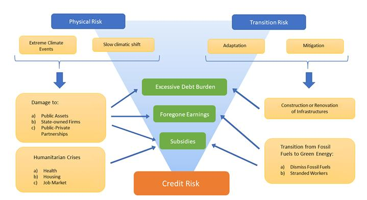

Climate Risk, Sovereign Debt Sustainability and Financial Stability
Introduction
Climate change has emerged as one of the most significant macro-financial challenges of the 21st century. Once viewed primarily as an environmental or humanitarian issue, climate risk is now recognized as a systemic financial risk capable of undermining sovereign debt sustainability, monetary stability, and global financial systems. Central banks, finance ministries, and international financial institutions increasingly acknowledge that climate shocks, whether physical (such as natural disasters) or transition-related (such as carbon taxation), can materially affect sovereign balance sheets and investor confidence.
This paper synthesizes recent literature to examine how climate risk affects sovereigns and, in turn, financial stability. It reviews the mechanisms through which climate shocks translate into sovereign risk, the evolving nature of market pricing and sovereign credit assessments, and the implications for fiscal and financial stability.
Climate-Related Risk Drivers and Transmission Channels
The BIS (2021) outlines the key climate-related risk drivers that influence financial systems, distinguishing between physical risks (the economic losses resulting from acute or chronic climate events) and transition risks (which stem from policy, technological, or market shifts during the transition toward a low-carbon economy). These two risk types are interlinked and can jointly influence sovereign risk profiles.
For sovereigns, climate-related risks manifest primarily through fiscal channels. Physical risks increase public spending on reconstruction and adaptation while simultaneously reducing tax revenues and output. Frequent disasters erode agricultural productivity and infrastructure, depressing GDP and worsening fiscal balances. Transition risks, conversely, affect revenues through declining carbon-intensive exports or stranded assets in fossil-fuel-dependent economies. According to the BIS (2021), emerging markets are especially vulnerable to climate-related fiscal pressures given their commodity export dependence and limited adaptive capacity.
A second transmission mechanism operates through macro-financial stability. Climate shocks often trigger capital outflows, exchange rate depreciation, and higher sovereign borrowing costs, particularly in emerging markets with limited fiscal buffers (BIS et al., 2020; IMF, 2022). These shocks amplify pre-existing vulnerabilities, as governments with constrained budgets are forced to borrow under deteriorating credit conditions. The BIS (2021) highlights that climate-related fiscal pressures can propagate through the sovereign-bank nexus, where domestic banks hold substantial amounts of government securities as collateral or reserves. When fiscal positions weaken following climate shocks, the resulting deterioration in sovereign creditworthiness can undermine bank balance sheets, further tightening financial conditions and raising refinancing risks. Consequently, climate-related risks may evolve from fiscal pressures into broader financial stability concerns, reinforcing the systemic nature of climate risk in emerging markets (BIS et al., 2020; NGFS, 2022).
In sum, climate-related risk drivers exert pressure through multiple, reinforcing channels: fiscal, macroeconomic, and financial, making them both a sovereign and systemic concern.

Climate Risk and Sovereign Creditworthiness
Recent studies by the ECB and IMF provide empirical evidence that climate risks are increasingly priced into sovereign credit and bond markets. The ECB (2025) demonstrates that markets differentiate between sovereign issuers based on climate vulnerability: countries with higher exposure to physical climate risks face higher sovereign bond spreads and lower credit ratings.
Similarly, the IMF (2020) shows that climate shocks such as hurricanes, droughts, or extreme temperature anomalies lead to statistically significant increases in sovereign borrowing costs, especially for low-income and small island economies. These effects persist for years, suggesting that markets incorporate climate risk into long-term assessments of debt sustainability.
Beirne et al. (2021) study the link between climate risk and borrowing costs for 40 advanced and emerging economies, finding that the effect of climate risk on sovereign bond yields is substantially higher for countries deemed highly vulnerable to climate change. Using a panel VAR, they further find that the effect of a climate shock on bond yields becomes permanent after approximately 18 quarters.
A related study by the BIS (2025) reinforces this evidence, emphasizing that investors increasingly demand higher risk premia from climate-vulnerable sovereigns. It highlights the interplay between market expectations, fiscal fundamentals, and global risk appetites, showing how climate risks propagate through asset prices and cross-border investment flows.
Taken together, these findings suggest that climate risks have become an essential determinant of sovereign creditworthiness. Countries' fiscal resilience, adaptive capacity, and policy credibility increasingly influence their access to capital markets, shaping financial stability at both national and global levels. Detailed empirical comparisons and quantitative estimates from the cited studies are presented in Annexure 1.
Financial Stability Implications
The link between sovereign vulnerability and financial stability operates through several channels. One is the sovereign-bank nexus, wherein domestic financial institutions hold large amounts of government debt. When sovereign creditworthiness deteriorates due to climate risks, banks face capital losses, funding constraints, and contagion effects.
Grippa et al. (2019) emphasize that climate change can amplify existing financial risks, particularly in systems with high sovereign exposures. They argue that the banking sector's indirect exposure to climate risk through sovereign holdings is an underappreciated source of vulnerability. Similarly, Koetter et al. (2020) find that banks' regional exposure to climate disasters affects their lending behaviour and recovery patterns, with localized disasters leading to credit contractions, particularly in regions with weaker public support.
The literature also points to potential feedback loops between sovereign and financial stability. When sovereigns face higher borrowing costs due to climate-related downgrades, they may reduce public investment or raise taxes, which can slow growth and impair private sector balance sheets. Conversely, systemic financial instability can constrain sovereign financing options, creating a self-reinforcing cycle (BIS, 2021).
The BIS (2021) and ECB (2023) recommend integrating climate-related financial risks into prudential regulation and macroprudential stress testing frameworks. Central banks have started incorporating climate scenarios into supervisory reviews to assess potential impacts on capital adequacy and systemic risk.
Sovereign Debt Markets and Climate-Sensitive Instruments
The growing recognition of climate-related sovereign risk has spurred innovation in climate-sensitive debt instruments. Governments and international organizations are experimenting with new financial mechanisms designed to enhance fiscal resilience and investor confidence.
The UK HM Treasury (2023) initiative on Climate-Resilient Debt Clauses (CRDCs) exemplifies this shift. These clauses allow for temporary debt service suspension following a climate disaster, enabling affected countries to redirect funds toward recovery and adaptation. CRDCs, endorsed by the G7 and multilateral development banks, have gained traction as a policy tool for improving debt sustainability in climate-vulnerable countries.
Similarly, green bonds and sustainability-linked bonds have become increasingly popular among sovereign issuers. The literature suggests that while these instruments can mobilize climate finance and signal policy commitment, their impact on overall debt sustainability remains contingent on sound fiscal management and transparent reporting (BIS, 2025).
In emerging markets, access to such instruments remains constrained by higher risk perceptions and limited market depth. The IMF (2023) underscores that climate finance must be scaled up to prevent rising debt distress among climate-exposed economies. The intersection of fiscal policy, market development, and climate adaptation thus becomes central to maintaining global financial stability.
Policy and Institutional Responses
International financial institutions and central banks are increasingly at the forefront of integrating climate risk into macroeconomic and financial policy frameworks. The IMF, BIS, and ECB have each developed initiatives to address the sovereign-financial nexus of climate risk.
The BIS (2021) recommends enhancing the analytical capacity of central banks to understand climate transmission mechanisms and incorporate them into monetary and supervisory operations. It also advocates for global coordination on climate data and scenario analysis, emphasizing that no single jurisdiction can adequately address cross-border spillovers alone.
The ECB has adopted climate-related disclosure requirements for its collateral framework and is exploring green quantitative easing measures. Its working papers (ECB, 2023; ECB, 2025) emphasize the need for consistent integration of climate risks into fiscal sustainability assessments and credit ratings.
The IMF has embedded climate considerations into Article IV consultations and debt sustainability analyses, recognizing that climate shocks can undermine macroeconomic stability. It supports capacity development in climate risk management for emerging markets and small states, which are disproportionately affected by climate change.
At the national level, the UK HM Treasury (2023) initiative exemplifies how sovereign debt structures can be redesigned to enhance resilience. Similar mechanisms, such as catastrophe bonds and insurance-linked securities, are being adopted by several emerging markets.
Overall, the institutional response has evolved from risk recognition to policy innovation. However, implementation gaps remain, particularly in emerging economies where fiscal space and institutional capacity are limited.
Conclusion
The synthesis of recent literature reveals that climate change poses a profound challenge to sovereign creditworthiness and global financial stability. The evidence from the BIS, ECB, IMF, and related research demonstrates that climate risk is increasingly priced into sovereign debt markets, affecting both advanced and emerging economies. Physical and transition risks operate through fiscal, macroeconomic, and financial channels, reinforcing one another in complex feedback loops.
While the policy community has made significant progress in recognizing and integrating climate risks, gaps remain in data quality, modelling capacity, and institutional coordination. The development of innovative financial instruments such as CRDCs and green bonds offers partial solutions but cannot substitute for comprehensive fiscal and monetary frameworks that internalize climate risks.
Ultimately, maintaining financial stability in the era of climate change requires a holistic approach that aligns sovereign risk management with sustainable finance and macroprudential oversight. For policymakers and investors alike, climate risk is no longer a future threat: it is a present determinant of financial resilience.
Annexure 1: Climate Risks and Sovereign Borrowing Costs
| Study | Data and Sample | Methodology | Main Findings |
|---|---|---|---|
| Cevik & Jalles (2020) "This Changes Everything: Climate Shocks and Sovereign Bonds" |
98 countries (advanced and developing), 1995–2017. ND-GAIN Vulnerability and Resilience Indices; IMF IFS/WEO; World Bank WDI; Bloomberg and JPM EMBIG. | Panel regressions with fixed and dynamic effects; controls for GDP growth, debt, fiscal balance, inflation, reserves, and institutions; robustness checks with alternative spreads. | Higher vulnerability raises yields and spreads by approximately +150 bps per 1 SD; higher resilience lowers them by roughly 50–60 bps. Effects are 3× stronger in developing economies. |
| Beirne, Renzhi & Volz (2021) "Feeling the Heat: Climate Risks and the Cost of Sovereign Borrowing" |
40 countries (advanced and emerging), 2002 Q1–2018 Q4. ND-GAIN and FTSE Russell indices; quarterly sovereign yield data. | Two-stage approach: (1) panel fixed-effects regressions; (2) structural panel VAR impulse responses (2007 Q1–2017 Q4). | Climate vulnerability up by 1 unit raises yields by +113 bps (EMEs), +155 bps (ASEAN), and +275 bps (high-risk group); resilience lowers yields by approximately 10 bps; impacts persist around 4.5 years. |
| Anyfantaki et al. (2025) "Decoding Climate-Related Risks in Sovereign Bond Pricing" |
52 countries (26 AEs and 26 EMDEs), 2000–2023. CO₂ emissions, temperature anomalies, EM-DAT disaster data, macro and governance indicators. | Panel fixed-effects regressions with interaction terms for transition vs. physical risks; local projection models for medium-term yield responses; heterogeneity analysis (AEs vs. EMDEs). | Transition risk (CO₂) up 1% raises yields approximately 1%; chronic physical risk (temperature) is insignificant; acute risk (disasters) raises yields by approximately +50 bps after 2 years in EMDEs; effects are stronger for high-debt states. |
References
- Anyfantaki, S., et al. (2025). Decoding climate-related risks in sovereign bond pricing: A global perspective. ECB Working Paper Series.
- Beirne, J., Renzhi, N., and Volz, U. (2021). Feeling the heat: Climate risks and the cost of sovereign borrowing. International Review of Economics and Finance.
- Bank for International Settlements. (2021). Climate-related risk drivers and their transmission channels. Basel Committee on Banking Supervision.
- Bank for International Settlements, Bank of France, International Monetary Fund, and Network for Greening the Financial System. (2020). The green swan: Central banking and financial stability in the age of climate change. Bank for International Settlements.
- Bank for International Settlements. (2025). Decoding climate-related risks in sovereign bond pricing. BIS Working Paper.
- Cevik, S., and Jalles, J. T. (2020). This changes everything: Climate shocks and sovereign bonds. IMF Working Paper.
- European Central Bank. (2023). Climate change and sovereign risk. ECB Economic Bulletin, Special Feature.
- European Central Bank. (2025). Do climate risks matter for sovereign credit ratings? ECB Working Paper Series.
- Grippa, P., Schmittmann, J., and Suntheim, F. (2019). Climate change and financial risk. Finance and Development, 56(4), 26–29. International Monetary Fund.
- International Monetary Fund. (2020). This changes everything: Climate shocks and sovereign bonds. IMF Working Paper.
- International Monetary Fund. (2022). Global Financial Stability Report, Chapter 3: Climate Change and Financial Stability. Washington, DC: IMF.
- Koetter, M., Noth, F., and Rehbein, O. (2020). Borrowers under water! Rare disasters, regional banks, and recovery lending. Journal of Financial Intermediation, 43, 100811.
- Network for Greening the Financial System. (2022). Macroeconomic and financial stability implications of climate change: Research priorities. Paris: NGFS.
- UK HM Treasury. (2023). Climate-Resilient Debt Clauses (CRDCs): Guidance and primer.